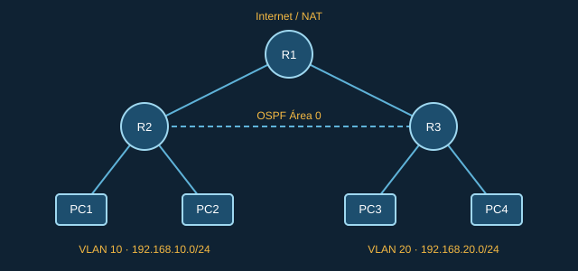

1. Las capas del modelo OSI
| Capa | Nombre | PDU | Ejemplos |
|---|---|---|---|
| 7 | Aplicación | Datos | HTTP, DNS, DHCP, SMTP |
| 6 | Presentación | Datos | TLS, JPEG, UTF-8 |
| 5 | Sesión | Datos | Control de diálogo |
| 4 | Transporte | Segmento | TCP, UDP |
| 3 | Red | Paquete | IPv4, IPv6, ICMP, OSPF |
| 2 | Enlace de datos | Trama | Ethernet, 802.1Q, STP |
| 1 | Física | Bits | Cobre, fibra, radio |
2. Ejemplo de subneteo con VLSM
Red base: 192.168.1.0/24. Se reparte empezando por la subred más grande:
- Ventas, 100 hosts → 192.168.1.0/25 (126 hosts útiles)
- Soporte, 50 hosts → 192.168.1.128/26 (62 hosts útiles)
- Gerencia, 20 hosts → 192.168.1.192/27 (30 hosts útiles)
- Enlace entre routers → 192.168.1.224/30 (2 hosts útiles)
3. Conmutación y enrutamiento con Cisco
- VLAN: separan dominios de difusión dentro de un mismo switch.
- Troncales 802.1Q: llevan varias VLAN por un solo enlace.
- Router-on-a-stick: subinterfaces para enrutar entre VLAN.
- OSPF: protocolo de estado de enlace que elige rutas por costo.
- ACL: filtran tráfico por origen, destino y puerto.
- NAT/PAT: traducen direcciones privadas a una pública.
4. Laboratorio en GNS3
En GNS3 se armó una topología con tres routers Cisco conectados por OSPF, dos VLAN de usuarios y una salida a Internet con NAT. El tráfico se analizó con Wireshark capturando sobre los enlaces.

Configuración de OSPF en el router R1:
R1(config)# router ospf 1
R1(config-router)# network 10.0.0.0 0.0.0.3 area 0
R1(config-router)# network 10.0.0.4 0.0.0.3 area 0
R1(config-router)# end
R1# show ip ospf neighbor
5. Servicios de la capa de aplicación
- HTTP / HTTPS (80 / 443, TCP)
- Transfiere páginas web entre cliente y servidor.
- DNS (53, UDP/TCP)
- Traduce nombres de dominio a direcciones IP.
- DHCP (67 / 68, UDP)
- Asigna IP, máscara, puerta de enlace y DNS de forma automática (proceso DORA).
- SMTP (25, TCP)
- Envía correo electrónico entre servidores.